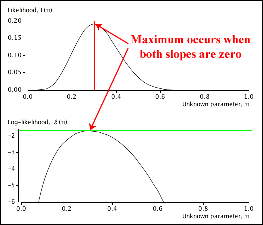

Maximum likelihood estimate
The likelihood function, \(L(\theta \; | \; x_1, x_2, \dots, x_n) = p(x_1, x_2, \dots, x_n \;| \; \theta)\), gives the probability of getting the data that were recorded for different values of the unknown parameter \(\theta\). A value of \(\theta\) that gives the observed data high probability is more likely to be correct than one that would make the observed data unlikely.
Definition
The maximum likelihood estimate of a parameter \(\theta\) is the value that maximises the likelihood function,
\[ L(\theta \; | \; x_1, x_2, \dots, x_n) = p(x_1, x_2, \dots, x_n \;| \; \theta) \]Finding a maximum likelihood estimate (MLE) therefore involves maximising a function of \(\theta\). This is usually a "turning point" of the likelihood function.
Finding the maximum likelihood estimate
The maximum likelihood estimate of a parameter \(\theta\) can normally be obtained as a solution to the equation
\[ \frac {d\; L(\theta \; | \; x_1, x_2, \dots, x_n)} {d\; \theta} \;\; = \;\; 0 \]It is often easier mathematically to maximise the logarithm of the likelihood function rather than the likelihood function itself.
Maximising the log-likelihood
Writing
\[ \ell(\theta) \;=\; \log L(\theta) \]the maximum likelihood estimate of a parameter \(\theta\) can normally be found by solving the equation
\[ \frac {d\; \log L(\theta \; | \; x_1, x_2, \dots, x_n)} {d\; \theta} \;\; = \;\; \ell'(\theta) \;\; = \;\; 0 \](Proved in full version)
We will now give a simple example.
A simple binomial example
Consider a random variable \(X\) that is the number of successes in \(n=20\) independent trials, each of which has probability \(\pi\) of success. If the experiment resulted in \(x=6\) successes, the likelihood function would be
\[ L(\pi) = {{20} \choose 6} \pi^6(1-\pi)^{20-6} \;\; = \;\;38,760 \; \times \pi^6(1-\pi)^{14} \]Instead of differentiating \(L(\theta)\), it is easier to differentiate the log-likelihood to find the maximum likelihood estimate,
\[ \ell(\pi) \;\; = \;\; \log L(\pi) \;\; = \;\; 6 \log(\pi) + 14 \log(1 - \pi) + K\]where \(K\) is a constant that does not depend on \(\pi\). We solve
\[ \frac {d \; \ell(\pi)} {d\; \pi} \;\; = \;\; \frac 6 {\pi} - \frac {14} {1 - \pi} \;\; = \;\; 0 \] \[ 6(1-\pi) = 14\pi \] \[ 6 = 20\pi \]The maximum likelihood estimate of \(\pi\) is therefore \( \hat {\pi} = \frac 6 {20} \), the sample proportion of successes.
The diagram below shows both the likelihood function and the log-likelihood. It illustrates the fact that both functions have their maximum at the same value of \(\pi\).

Generalising to a binomial experiment in which \(x\) successes are observed in \(n\) trials,
\[ \ell(\pi) \; = \; \log L(\pi) \; = \; x \log(\pi) + (n-x) \log(1 - \pi) + K(n, x) \] \[ \frac {d \; \ell(\pi)} {d\; \pi} \; = \; \frac x {\pi} - \frac {n-x} {1 - \pi} \; = \; 0 \]which can be solved to give
\[ \hat {\pi} \;=\; \frac x n \]Note that we are using natural logarithms (base-e) here, not logarithms to the base 10.